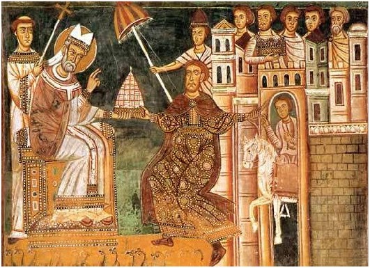

0754 The Donation of Constantine - In 751 Aistulf, king of the Lombards (a Scandinavian horde), conquers what remains of the Byzantine Empire in northern Italy and demands the submission of Pope Stephen II in Rome. In France, Pepin the Short, Mayor of the Palace of Neustria and Austrasia and a Roman Catholic, deposes the last Merovingian king and claims the throne as King of the Franks, yet lacks consensus for his rule. Stephen is in desperate need of an ally against the Lombards and so approaches Pepin with the promise of monarchical legitimacy in return for his support. The Donation of Constantine, by which the Emperor Constantine in 315 (or 317) gave to Pope Sylvester I the right to temporal rule over Western Europe, is likely forged for the occasion. Stephen, by the authority vested in the Donation, anoints Pepin King of the Franks in a ceremony recalled in French coronation rites down to 1792. Pepin returns the favor by granting Stephen the Lombard territories he takes in northern and central Italy (the Rome-Ravenna Corridor that becomes the Papal States). In 778, Pope Hadrian refers to the Donation in requesting further land-grants from Charlemagne. The forgery is exposed by Latinist scholar Lorenzo Valla in 1440, though doubts as to its authenticity had been voiced by Emperor Otto III as early as 1001.

Constantine (right) delivers the West to Sylvester